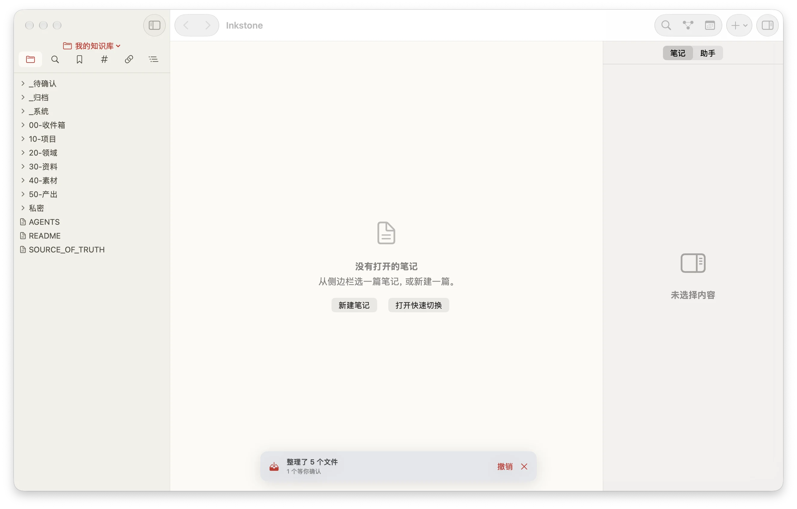

Inkstone › AI 知识库
会自己整理的 AI 知识库
把笔记、PDF、照片、录音拖进一个文件夹。Inkstone 按你用大白话写的规则、借助苹果本机模型逐个归档，并让任何 AI 助手都看得懂这个文件夹。

什么是 AI 知识库？
AI 知识库就是你自己的笔记和文件，整理得让你和 AI 助手都找得到东西，并且用文字写明东西放在哪、以哪个文件为准。和普通笔记文件夹的区别就在后半句：AI 没法开口问你发票放哪了。
Inkstone 让它始终是一个普通文件夹，里面是 Markdown 和原始文件。没有被锁进数据库，任何 App、任何 AI 智能体都能读。
Inkstone 怎么建
- 人和 AI 都好用的结构：收件箱、项目、领域、资料、素材、产出、私密，另有放拿不准文件的「待确认」，和存放重复文件的归档。
- 隐私优先：证件、银行、医疗类先进私密文件夹。然后是你的规则，再看文件提到的项目，素材按类型和月份。
- 剩下的交给本机模型。它读文件开头，给出文件夹和标题建议；拿不准时，文件留着等你决定。
- 一眼能扫的命名：20261119-装修报价.md——先日期，后主题。
- 给 AI 的入口文件：AGENTS.md、README.md、SOURCE_OF_TRUTH.md，文件夹一变就重写。

放心交给它整理
不删除任何东西。每一步移动都先写日志，整轮可以撤销。笔记正文一个字都不改。文件多或有重复时，等你点头才动。
iPhone 和 iPad 上一样
从「文件」App 添加文件，它们进收件箱，再按同样的方式归档。知识库放在 iCloud 云盘，Mac 和 iPhone 看到的是同一个文件夹。

常见问题
AI 会读我所有的文件吗？
本机模型只读规则放不了的文件的开头，而且在你的设备上读。只有你填了自己的 key 并打开，才会用云端模型，发送的是这个文件的名字和开头、你的文件夹名和规则；看起来涉及隐私的文件绝不发送。
能和 Obsidian 一起用吗？
Obsidian 仓库按原样打开，永远不会被重新整理。Inkstone 建的知识库是普通 Markdown，Obsidian 也能打开。
支持哪些设备？
Mac（macOS 26）、iPhone 和 iPad（iOS 26）。本机模型需要支持 Apple 智能的设备；不支持时按你的规则整理。
要钱吗？
不要。Mac 版和 App Store 版都免费，也不用注册。